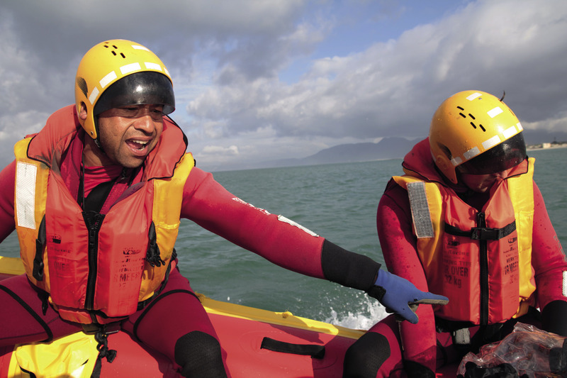

Beskermende klere
In die vorige drie hoofstukke het jy situasies ondersoek wat veroorsaak dat mense vlugtelinge word. Jy het ook die prosessering van voedsel ondersoek. Jy het ’n ontwerpopdrag geskryf vir ’n maaltyd vir 100 vlugtelinge, en jy het ’n maaltyd wat genoegsame voedingswaarde het en ook smaaklik is, beplan, gekook en evalueer. In hierdie hoofstuk gaan jy die spesiale klere wat deur reddingswerkers in noodtoestande gedra word, ondersoek. Byvoorbeeld, hierdie reddingswerkers kan van die brandweerdienste of van die Nasionale See-Reddings Instituut (NSRI) wees.

Figuur 1: Brandbestryders moet spesiale klere dra om hulle teen vuur te beskerm.

Figuur 2: See-reddingswerkers dra ook spesiaal-ontwerpte beskermende klere.
Nooddienste
Gevaarlike situasies soos vure, vloede en ongelukke gebeur gewoonlik onverwags. Mense moet onmiddellike aksie neem om die slagoffers wat betrokke is se lewens te red. Hierdie tipe situasie word ’n noodtoestand genoem.
Noodtoestande beteken nie altyd dat mense weggedryf word van hulle huise nie. ’n Noodtoestand kan soms net een familie, of selfs net een persoon, affekteer.
Byvoorbeeld, ’n huis wat brand, of ’n veldbrand, kan ’n hele groep huise in gevaar stel. Ander voorbeelde van noodtoestande is wanneer swemmers in die moeilikheid beland in die see, of wanneer vissermanne in die moeilikheid is as gevolg van ’n sinkende boot.
Mense wat in noodtoestande werk, word reddingswerkers genoem. Hulle word spesiaal opgelei om noodtoestande te hanteer, en hulle moet gereed wees om vinnig op ’n hulproep te reageer. Nooddienste sluit in die brandweerdienste, polisie, ambulanse, en see-reddingsdienste.
Reddingswerkers betree gevaarlike situasies, dus is dit noodsaaklik dat hulle beskermende klere dra.
Reddingswerkers dra klere wat ontwerp is om hulle van gevaar te beskerm. Hierdie klere staan bekend as toerusting vir persoonlike beskerming, of TPB. Kenners bestudeer die gevare wat veroorsaak word deur noodtoestande, en ontwerp en maak klere, helmets en ander items wat reddingswerkers sal beskerm terwyl hulle hul werk doen.
Nooddienste
1. Dink na oor noodtoestande wat in jou gemeenskap kan gebeur en lys hulle hieronder.
2. Lys die nooddienste wat ontbied kan word vir hulp in ’n noodtoestand.
3. Dink aan ander gemeenskappe. Is daar noodtoestande wat hulle kan affekteer, maar wat nie jou gemeenskap sal affekteer nie? Dink oor die omgewing waar hierdie gemeenskappe bly. Is daar riviere of strande naby? Is hulle in die stede, dorpe, bosgebiede, of graslande? Lys al die noodtoestande wat in hierdie plekke kan plaasvind. Lys dan ook die nooddienste wat ingeroep kan word om hulle te help.
|
Noodtoestande |
Nooddienste |
|
|
|
|
|
|
|
|
|
Klere vir reddingswerkers
Reddingswerkers dra beskermende klere wat spesiaal ontwerp is om hulle teen die gevare waarmee hulle in aanraking kan kom gedurende ’n noodtoestand, te beskerm.
Byvoorbeeld, brandbestryders benodig beskerming teen vlamme, rook en hitte, en see-reddingswerkers benodig beskerming van water, reën, wind en koue.
Die materiaal wat gebruik word om enige tipe kledingstuk te maak, word tekstiel genoem. Spesiale tekstiele word gebruik om beskermende klere te maak. Hierdie tekstiele word gemaak van geweefde of gebreide materiaal, wat met chemikalieë behandel word om aan hulle spesiale eienskappe te gee, byvoorbeeld waterdigtheid of brandwerendheid.

Figuur 3: ’n Vuur op ’n berg. Brandbestryders monitor die situasie om seker te maak dat die naburige gemeenskap veilig is.
Klere vir reddingswerkers
Jy het nou geleer van sommige beskermende klere wat deur reddingswerkers gebruik word, en jy gaan nou beskermende klere van jou eie ontwerp.
Brandbestryders en see-reddingswerkers dra spesifieke klere, soos op die vorige paar bladsye beskryf is. Dink na oor ander nooddienste wat jy gelys het in die oefening “Nooddienste”.
Wellington stewels is vernoem na die voormalige hertog van Wellington, in Engeland. Hy is bekend as ’n soldaat wat hierdie stewels in die oorlog gedra het.
1. Skryf ten minste drie noodtoetstand situasies neer waarop hierdie nooddienste moet reageer.
2. Maak ’n lys van spesiale beskermende klere wat hulle in elke situasie moet dra.
3. Skryf neer van watter tekstiele hierdie klere gemaak moet word.
4. Teken ’n prent van een tipe beskermende kledingstuk waaroor jy geskryf het.

Ondersoek beskermende klere en nooddienstetoerusting
In hierdie afdeling gaan jy die verskillende tipes beskermende klere en nooddienstetoerusting ondersoek wat deur brandbestryders en see- reddingswerkers gebruik word.
Werk saam in groepe van vier.
Kies een van die nooddienste beroepe waaroor jy reeds geleer het: brandbestryding of see-redding.
Bespreek in detail die klere wat hierdie reddingswerkers moet dra om hulle in hulle pligte te beskerm. Gebruik die inligting wat in hierdie hoofstuk gegee word, maar probeer ook om ekstra inligting van mense wat jy ken, te verkry. Byvoorbeeld, jy mag dalk iemand ken wat by die brandweerstasie werk en jy kan met daardie persoon gesels. Die prente hieronder sal jou meer inligting gee.

See-reddingswerkers dra altyd reddingsbaadjies wanneer hulle werk. Reddingsbaadjies help hulle om te dryf wanneer hulle in die see is en keer dat hulle verdrink. ’n Reddingsbaadjie word van dik plastiek of rubber gemaak en het lug aan die binnekant sodat dit kan dryf.
Figuur 5
Beskermende toerusting of nooddienstetoerusting word deur reddingswerkers gebruik en sluit in reddingsbaadjies vir see-reddingswerkers, en suurstoftenks vir brandbestryders.
Brandbestryders dra suurstof by hulle om hulle te help asemhaal wanneer daar baie rook van ’n vuur is. ’n Suurstoftenk is ’n voorbeeld van die tipe beskermende toerusting wat deur brandbestryders gebruik word.
Die tenk word van ’n dik metaal gemaak om te keer dat die suurstof ontplof. Die pype word van rubber gemaak sodat dit waterdig is.
Die skakels word bedek deur glas of deursigtige plastiek, wat albei waterdig is.
Figuur 6: Brandbestryders gebruik suurstoftenks.
Beskermende klere en nooddienstetoerusting
Nadat jy jou ondersoek gedoen het en jy al die inligting het, vul die tabel hieronder in.
Skryf in die eerste kolom ’n kledingstuk of toerusting waarvan jy geleer het, neer. Antwoord dan die vrae in die ander kolomme. Jy moet weet waarvan die kledingstuk of toerusting gemaak is, en ook waarom dit van hierdie materiaal gemaak word. Hieronder is twee voorbeelde om jou te help.
|
Brandbestryders |
See-reddingswerkers |
|||
|
Gemaak van? |
Waarom? |
Gemaak van? |
Waarom? |
|
|
baadjie |
brandwerende tekstiel |
kan nie brand nie |
dik plastiek |
kan slegte weer weerstaan en hou die reddingswerker warm en droog |
|
stewels |
leer |
sterk genoeg om rubber brandbestryders se bene en voete van vlamme te beskerm |
rubber |
waterdig |
Nadat jy die tabel voltooi het, beantwoord die volgende vrae op jou eie:
1. Hoekom is dit belangrik dat daar van beskermende tekstiele gebruik gemaak word om klere vir reddingswerkers te maak?
2. Watter klere moet brandbestryders dra, en watter toerusting moet hulle dra om te reageer op ’n hulproep?
3. In watter ander noodtoestande moet spesiale klere of toerusting gebruik word? Dink aan die vlugtelinge waarvan jy in hoofstuk 6 geleer het. Watter tipe noodgevalle kan in hulle kamp gebeur?
Volgende week
Volgende week gaan jy met jou mini-PAT vir hierdie kwartaal begin. In hierdie mini-PAT gaan jy ’n natuurramp ondersoek en noodskuilings ontwerp vir die slagoffers van hierdie ramp. Jy gaan ook ’n ontwerp idee skets en ’n model van ’n noodskuiling bou.